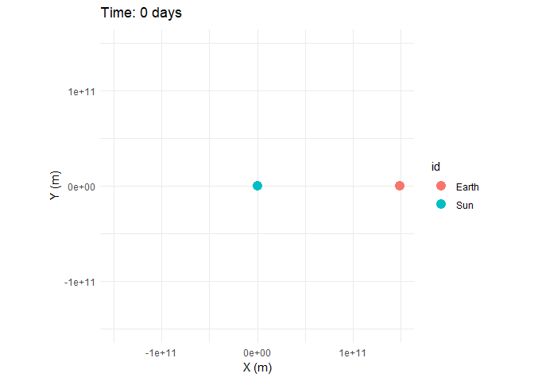
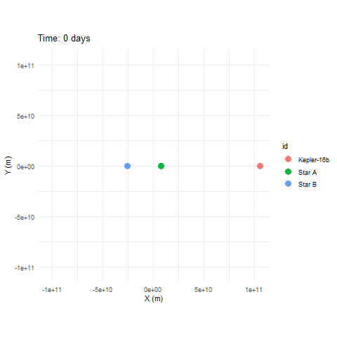

A tidy physics engine for building and visualizing orbital simulations in R.
Early beta —
orbitris functional and the physics engine is stable, but this is an early release. Function names, defaults, and behavior may change between versions. Feedback, bug reports, and contributions are welcome on GitHub.
orbitr is a lightweight N-body gravitational simulator built for the R ecosystem. Simulate planetary orbits, binary star systems, or chaotic three-body problems in a few lines of pipe-friendly code. Under the hood it ships a compiled C++ engine via Rcpp and falls back gracefully to a pure-R implementation.
Four Lines to an Orbit
library(orbitr)
sim <- create_system() |>
add_body("Sun", mass = mass_sun) |>
add_body("Earth", mass = mass_earth, x = distance_earth_sun, vy = speed_earth) |>
simulate_system(time_step = seconds_per_day, duration = seconds_per_year)
sim |> plot_orbits()
And animated:
animate_system(sim, fps = 15, duration = 5)
Features
-
Tidy output —
simulate_system()returns a standard tibble (one row per body per time step), ready fordplyr,ggplot2,plotly, or anything else in the R ecosystem. - Built-in physical constants — real-world masses, distances, and orbital speeds for the Sun, all eight planets, and the Moon, so you don’t have to look anything up. See Physical Constants.
-
C++ engine — a compiled
Rcppacceleration kernel handles the gravity loop, with automatic fallback to vectorized R if the compiled code isn’t available. - Three integrators — Velocity Verlet (default, symplectic, energy-conserving), Euler-Cromer (fast preview), and standard Euler (educational comparison). See The Physics.
-
2D and 3D plotting —
plot_orbits()returns aggplotfor planar sims and auto-dispatches to an interactiveplotlywidget when any body has Z-axis motion. See 3D Plotting. -
Animations —
animate_system()renders orbits as GIFs with fading trails viagganimate, or as interactive 3D animations withplotly. -
Reference frame shifting —
shift_reference_frame("Earth")re-centers the simulation on any body, turning a heliocentric view into a geocentric one. See Reference Frames.
Kepler-16: A Real Circumbinary Planet
Kepler-16b orbits two stars — a real-life Tatooine. orbitr handles multi-body gravitational interactions natively, no special setup needed:
G <- gravitational_constant
AU <- distance_earth_sun
m_A <- 0.68 * mass_sun
m_B <- 0.20 * mass_sun
a_bin <- 0.22 * AU
r_A <- a_bin * m_B / (m_A + m_B)
r_B <- a_bin * m_A / (m_A + m_B)
v_A <- sqrt(G * m_B^2 / ((m_A + m_B) * a_bin))
v_B <- sqrt(G * m_A^2 / ((m_A + m_B) * a_bin))
r_planet <- 0.7048 * AU
v_planet <- sqrt(G * (m_A + m_B) / r_planet)
create_system() |>
add_body("Star A", mass = m_A, x = r_A, vy = v_A) |>
add_body("Star B", mass = m_B, x = -r_B, vy = -v_B) |>
add_body("Kepler-16b", mass = 0.333 * mass_jupiter, x = r_planet, vy = v_planet) |>
simulate_system(time_step = seconds_per_hour, duration = seconds_per_day * 228.8 * 3) |>
animate_system(fps = 15, duration = 6)
Learn More
- Get Started — install, simulate, and plot your first orbit
- Building Two-Body Orbits — the physics of choosing positions, velocities, and masses
- Examples — Earth-Moon, Sun-Earth-Moon, Kepler-16, and more
- Unstable Orbits — why most random configurations are chaotic
- Custom Visualization — build your own plots with ggplot2 and plotly
- The Physics — gravitational equations, integrators, and the C++ engine